Archive of Accepted Papers
Since 2016, VIS4DH has accepted 62 papers by 195 authors. Below is an overview of all accepted papers.
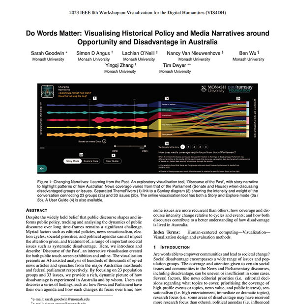
Do Words Matter: Visualising Historical Policy and Media Narratives around Opportunity and Disadvantage in Australia
2023
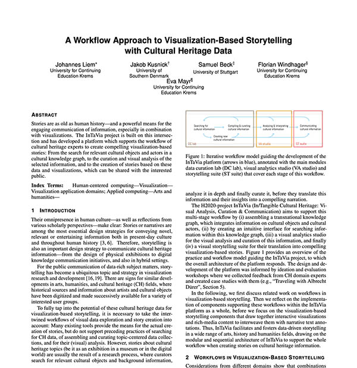
A Workflow Approach to Visualization-Based Storytelling with Cultural Heritage Data
2023
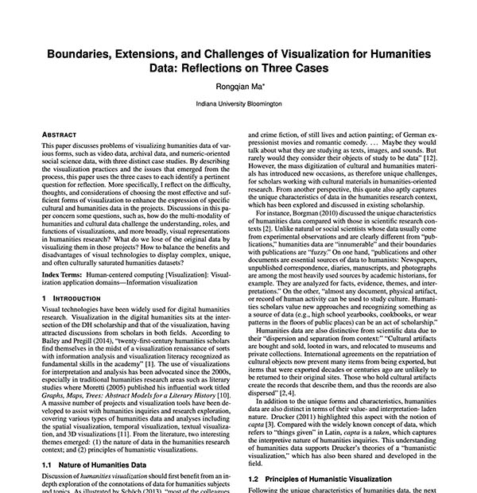
Boundaries, Extensions, and Challenges of Visualization for Humanities Data: Reflections on Three Cases
2022
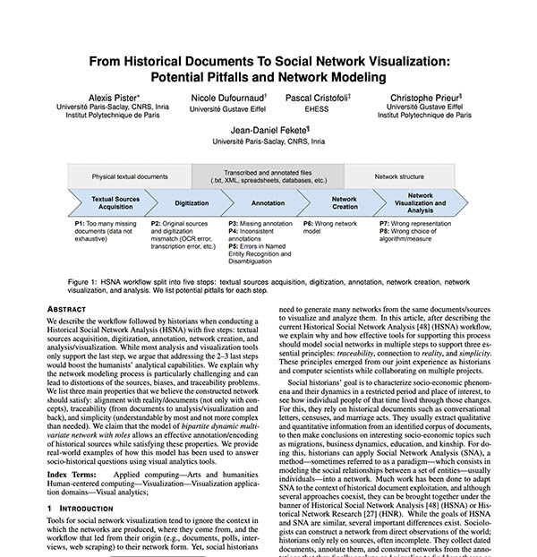
From Historical Documents To Social Network Visualization: Potential Pitfalls and Network Modeling
2022
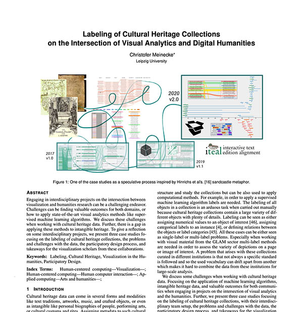
Labeling of Cultural Heritage Collections on the Intersection of Visual Analytics and Digital Humanities
2022
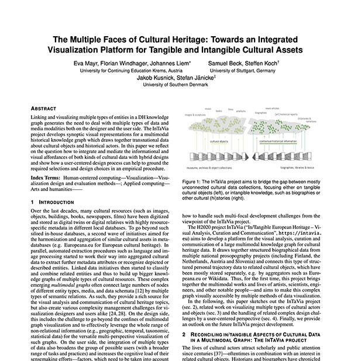
The Multiple Faces of Cultural Heritage: Towards an Integrated Visualization Platform for Tangible and Intangible Cultural Assets
2022
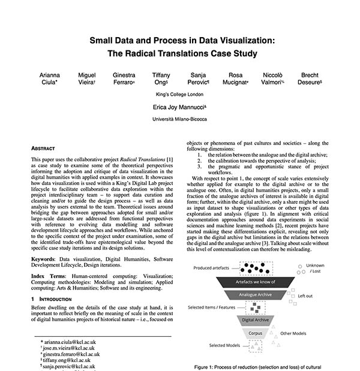
Small Data and Process in Data Visualization: The Radical Translations Case Study
2021
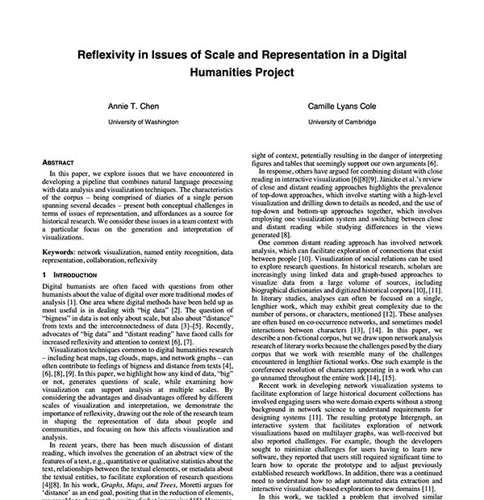
Reflexivity in Issues of Scale and Representation in a Digital Humanities Project
2021
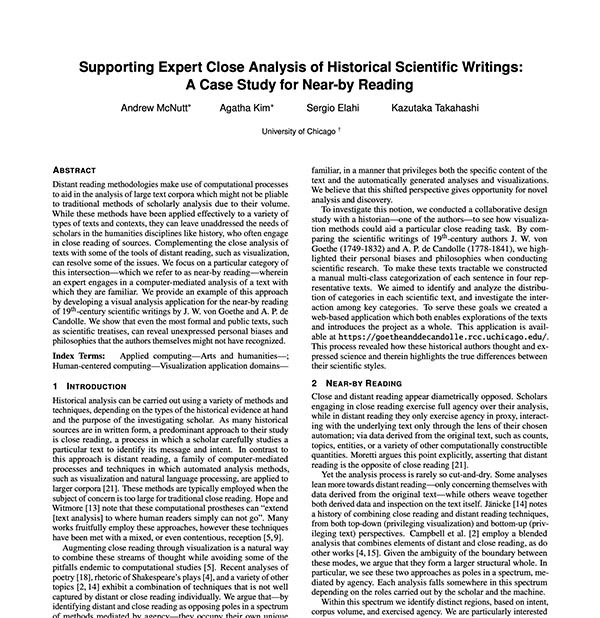
Supporting Expert Close Analysis of Historical Scientific Writings: A Case Study for Near-by Reading
2020
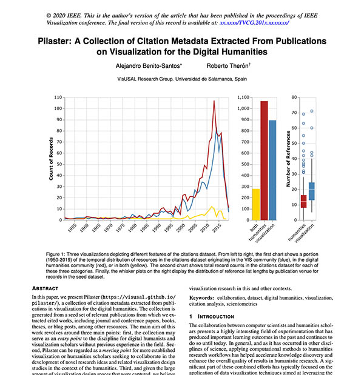
Pilaster: A Collection of Citation Metadata Extracted From Publications on Visualization for the Digital Humanities
2020
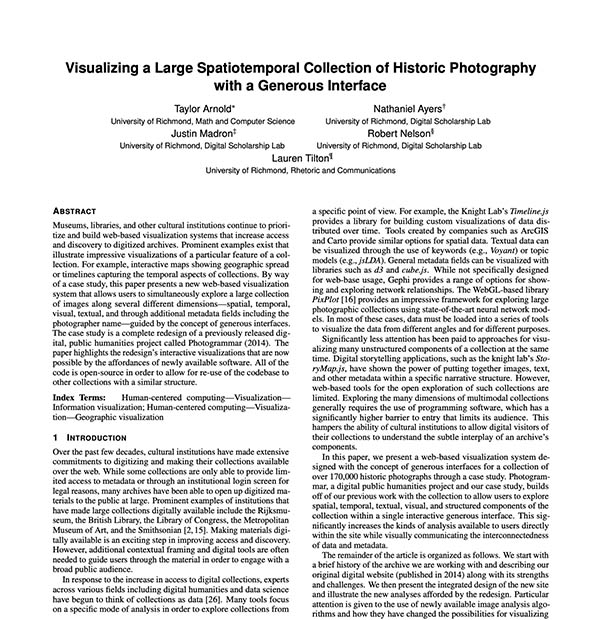
Visualizing a Large Spatiotemporal Collection of Historic Photography with a Generous Interface
2020
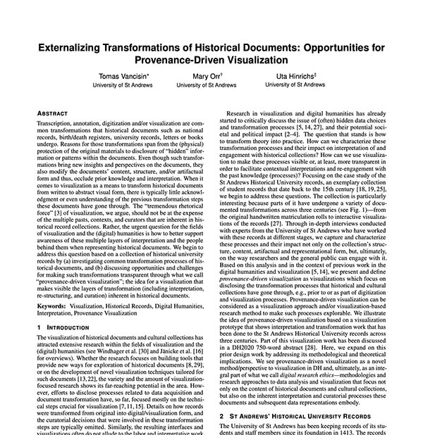
Externalizing Transformations of Historical Documents: Opportunities for Provenance-Driven Visualization
2020
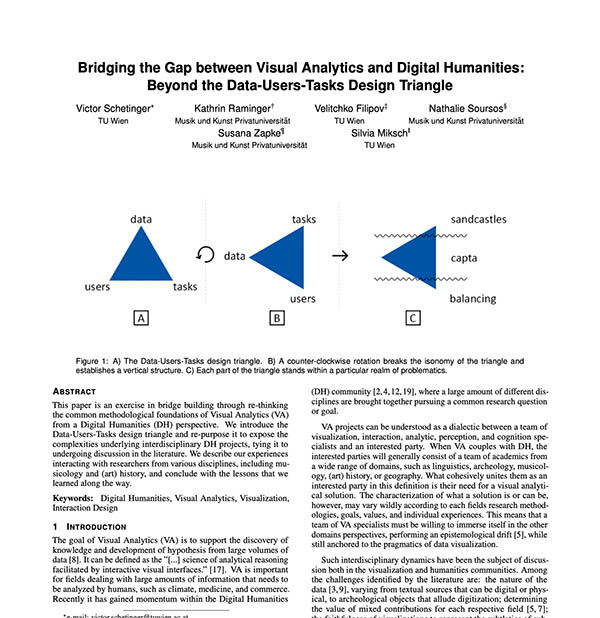
Bridging the Gap between Visual Analytics and Digital Humanities: Beyond the Data-Users-Tasks Design Triangle
2019
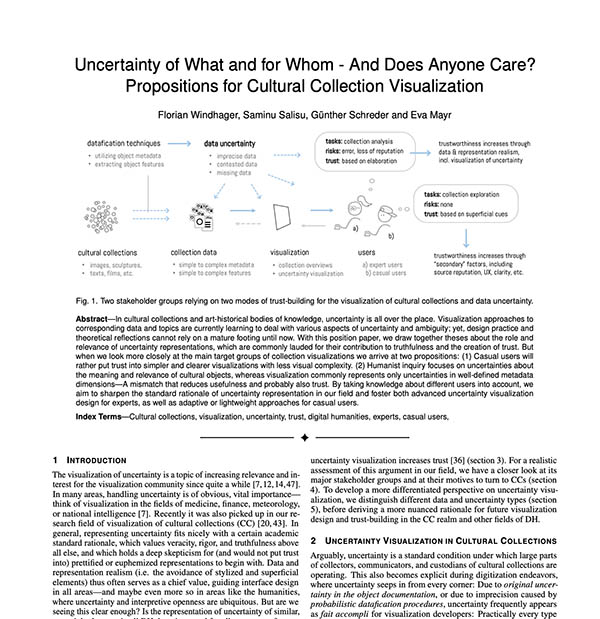
Uncertainty of What and for Whom - And Does Anyone Care? Propositions for Cultural Collection Visualization
2019
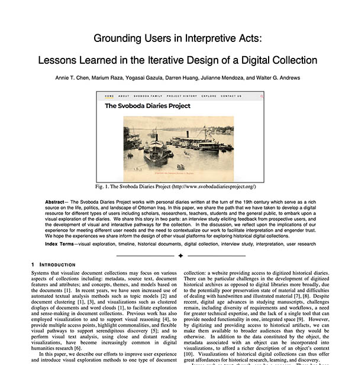
Grounding Users in Interpretive Acts: Lessons Learned in the Iterative Design of a Digital Collection
2019
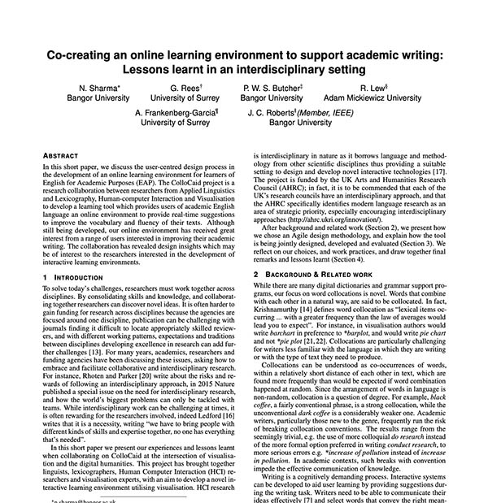
Co-creating an online learning environment to support academic writing: Lessons learnt in an interdisciplinary setting
2019
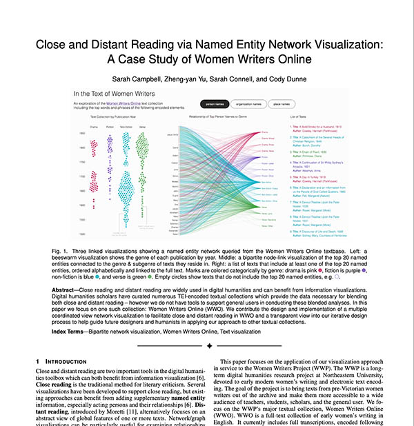
Close and Distant Reading via Named Entity Network Visualization: A Case Study of Women Writers Online
2018
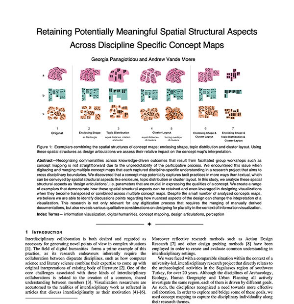
Retaining Potentially Meaningful Spatial Structural Aspects Across Discipline Specific Concept Maps
2018
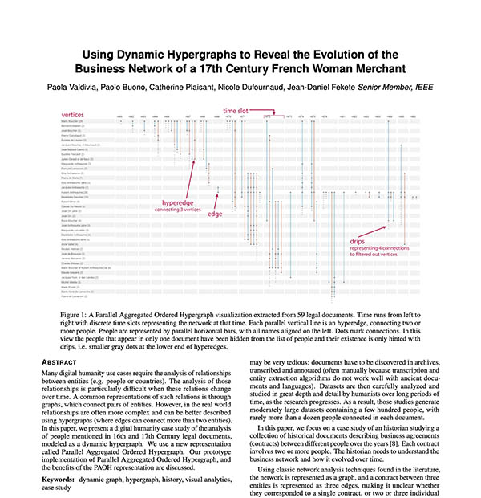
Using Dynamic Hypergraphs to Reveal the Evolution of the Business Network of a 17th Century French Woman Merchant
2018
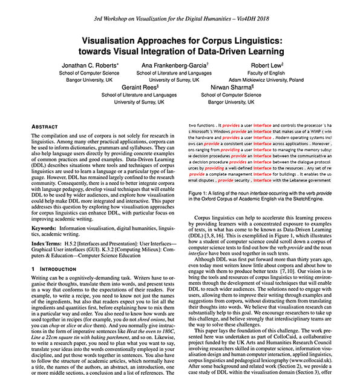
Visualisation Approaches for Corpus Linguistics: towards Visual Integration of Data-Driven Learning
2018
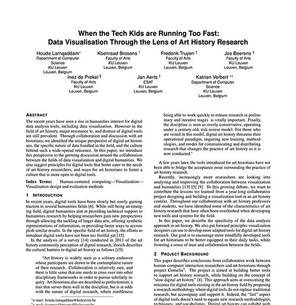
When the Tech Kids are Running Too Fast: Data Visualisation Through the Lens of Art History Research
2018
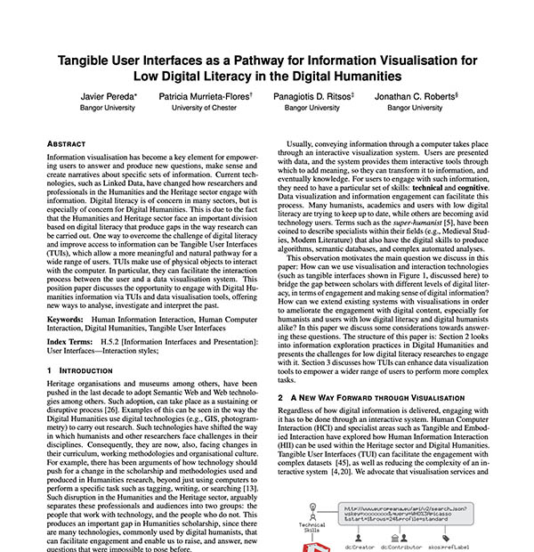
Tangible User Interfaces as a Pathway for Information Visualization for Low Digital Literacy in the Digital Humanities
2017
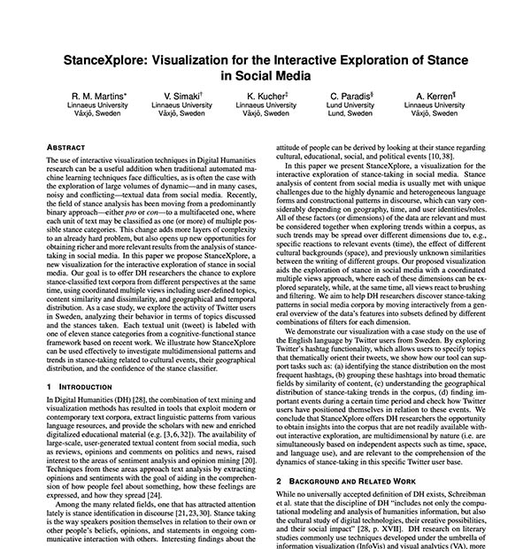
StanceXplore: Visualization for the Interactive Exploration of Stance in Social Media
2017
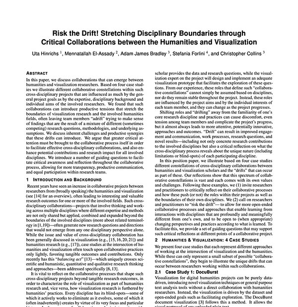
Risk the Drift! Stretching Disciplinary Boundaries through Critical Collaborations between the Humanities and Visualization
2017